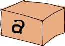

타입과 타입클래스
타입을 믿습니다!

이전에 하스켈은 정적인 타입 시스템을 채택하고 있다고 소개했었습니다. 모든 expression의 타입을 컴파일 할 때 알 수 있어서 더욱 안전하게 코딩을 할 수 있지요. 만약 불리언 타입을 숫자로 나누는 코드를 작성했다면 컴파일조차 되지 않을 것입니다. 이런 에러들을 컴파일 할 때 잡을 수 있으니, 실행 하다 죽는 것 보다야 훨씬 좋겠지요. 하스켈 안의 모든 것에는 타입이 있기 때문에, 컴파일러가 프로그램에 대해 사전에 많은 것 들을 알 수 있게 됩니다.
하스켈에는 Java나 Pascal에는 없는 타입 추론 기능이 있습니다. 숫자를 쓰면 따로 그게 숫자라고 알려줄 필요가 없다는 것이죠. 하스켈이 스스로 타입 추론이 가능하므로, 작성한 함수나 수식에 대해 명시적으로 타입을 지정하지 않아도 잘 동작합니다. 이제 대충 타입을 보았으니, 어느정도 하스켈의 기본을 배운 것 입니다. 그러나 타입 시스템을 이해하는 것은 하스켈을 배우는 데 있어서 아주 중요한 부분이므로 좀 더 알아보겠습니다.
타입은 각 수식이 어떤 카테고리에 속하는지 표시해주는 일종의 라벨같은 것입니다. 예를 들면 True라는 식은 boolean 타입, "hello"라는 식은 문자열 타입, 하는 식이죠.
이제 GHCI로 어떻게 수식의 타입을 알아보는지 배워보겠습니다. 단순히 :t 와 수식을 같이 입력하는 것으로 확인 할 수 있습니다. 한번 해볼까요?
 :t 와 수식을 입력하면 "수식 :: 타입" 형태로 출력되는 것을 볼 수 있습니다. :: 는 “~라는 타입을 갖는다”로 해석할 수 있겠네요. 명시적 타입은 항상 첫 글자를 대문자로 표현합니다. 보시다시피, 'a' 는 Char 타입을 갖습니다. Char가 문자(Character)의 준말을 의미한다는 건 쉽게 떠올릴 수 있습니다. True 는 Bool 타입입니다. 이해가 되네요. 음... 그럼 이런 경우는 어떨까요? "HELLO!" 의 타입을 물어보면 [Char] 라고 알려줍니다. 대괄호는 리스트를 의미하니, 이것을 문자의 리스트라고 읽을 수 있겠네요. 리스트와는 달리 튜플은 길이가 다르면 다른 타입을 갖습니다. 그러므로 (True, 'a') 의 타입은 (Bool, Char) 이고, ('a','b','c') 는 (Char, Char, Char) 타입이라고 할 수 있겠네요. 4 == 5 는 언제나 False 를 나타내므로 타입은 Bool 입니다.
:t 와 수식을 입력하면 "수식 :: 타입" 형태로 출력되는 것을 볼 수 있습니다. :: 는 “~라는 타입을 갖는다”로 해석할 수 있겠네요. 명시적 타입은 항상 첫 글자를 대문자로 표현합니다. 보시다시피, 'a' 는 Char 타입을 갖습니다. Char가 문자(Character)의 준말을 의미한다는 건 쉽게 떠올릴 수 있습니다. True 는 Bool 타입입니다. 이해가 되네요. 음... 그럼 이런 경우는 어떨까요? "HELLO!" 의 타입을 물어보면 [Char] 라고 알려줍니다. 대괄호는 리스트를 의미하니, 이것을 문자의 리스트라고 읽을 수 있겠네요. 리스트와는 달리 튜플은 길이가 다르면 다른 타입을 갖습니다. 그러므로 (True, 'a') 의 타입은 (Bool, Char) 이고, ('a','b','c') 는 (Char, Char, Char) 타입이라고 할 수 있겠네요. 4 == 5 는 언제나 False 를 나타내므로 타입은 Bool 입니다.
함수도 타입이 있습니다. 함수를 작성할 때 명시적으로 타입을 선언 할 수 있습니다. 이건 매우 짧은 함수를 작성 할 때를 제외하고는, 대체로 좋은 습관으로 볼 수 있습니다. 여기서부터 작성하는 모든 함수에는 타입을 지정하도록 하겠습니다. 이전에 List Comprehension을 이용해 문자열에서 대문자만 걸러내는 함수를 만들었던 것을 기억하시나요? 거기에 타입 선언을 추가하면 아래처럼 됩니다.
removeNonUppercase 는 [Char] -> [Char] 타입을 갖는데요, 이것은 문자열을 받아서 문자열로 매핑 해준다는 뜻입니다. 이 함수는 문자열을 받아 문자열을 돌려주는 함수이기 때문이지요. [Char] 타입은 String 타입과 똑같으니, removeNonUppercase :: String -> String 이렇게 쓰는 것이 더 명확해 보입니다. 타입 선언을 명시적으로 하긴 했지만, 컴파일러가 이 함수의 타입을 추론 할 수 있기 때문에 사실 명시적인 지정을 하지 않아도 됩니다. 그런데, 여러 개의 인자를 받는 함수인 경우는 어떻게 타입을 선언해야 할까요? 아래에 3개의 정수 인자를 받아 더하는 간단한 함수 예제가 있습니다.
인자들 간에는 -> 로 구분이 되고, 리턴 타입도 똑같이 -> 로 구분됩니다. 마지막에 있는 것이 리턴 타입이니, 처음 세 타입이 인자의 타입이겠네요. 왜 인자와 리턴 타입 사이를 Int, Int, Int -> Int 와 같이 명시적으로 표현하지 않고, 모두 똑같이 ->로만 구분하는지는 나중에 알아보도록 하겠습니다.
만약 작성한 함수의 타입을 선언하고 싶은데, 어떤 타입인지 잘 모르겠다면 작성한 함수를 :t 로 체크해보면 됩니다. 함수도 수식이니까 :t 가 문제없이 잘 동작 할 것입니다.
몇 가지 일반적인 타입들을 훑어봅시다.
Int 는 정수(Integer)의 준말입니다. 숫자 전체에 쓰일 수 있지요. 그러나, 7 은 Int 가 될 수 있지만, 7.2 는 될 수 없습니다. Int 는 바운드된(bounded) 타입입니다. 즉 최소값과 최대값이 있다는 뜻입니다. 보통 32비트 머신에서 Int 의 최대값은 2147483647, 최소값은 -2147483648 입니다.
Integer 는 에.. 또 정수(Integer)를 의미합니다. 그러나 Int 와의 큰 차이점은 이건 바운드(bounded)되지 않았다는 것이지요. 그래서, 아~주 아주 큰 숫자도 사용 할 수 있습니다. 하지만, Int 는 더 효율적이지요.
Float 는 single precision의 부동 소수점 실수입니다.
Double 은 double precision의 부동 소수점 실수이지요.
Bool 은 불리언 타입으로서, True 와 False 두가지 값 밖에 없습니다.
Char 타입은 문자를 의미합니다. 작은 따옴표와 함께 표현되지요. 문자의 리스트는 문자열(string)입니다.
튜플도 타입이지만 길이와 구성 요소에 따라 달라지기 때문에, 이론적으로 무한한 튜플 타입이 가능합니다. 비어있는 튜플 () 도 오직 () 라는 값을 가지는 타입입니다.
타입 변수
head함수의 타입을 생각해보세요. head는 특정 타입의 리스트를 받아 첫 번째 값을 돌려주는 함수였습니다. 무엇일까요? 한번 봅시다!
 흠… 이 a 가 뭐지요? 이게 타입인가요? 이전에 타입은 대문자로 시작한다고 했기 때문에 이건 정확히 타입은 아닐 것입니다. 이것은 사실 타입 변수라는 것이지요. 타입 변수라는 말은 즉, a 가 어떠한 타입도 될 수 있다는 뜻입니다. 타입 변수는 다른 언어의 제네릭(generic)과 유사합니다. 타입 변수를 사용하는 함수들을 다형 함수(polymorphic function)라고 부릅니다. 어찌되었든 head 의 타입은 특정 타입의 리스트를 받아서 첫 번째 값을 돌려주는 것이니 리턴 타입은 그 값의 타입이겠네요.
타입 변수 이름을 1글자 이상으로도 사용할 수 있지만, 보통 a, b, c, d 처럼 한 글자로 지정합니다.
타입을 한번 확인해보지요. fst 함수를 기억하시나요? 페어의 첫 번째 값을 돌려주는 함수였습니다.
fst가 두 타입으로 이루어진 튜플을 받아서, 첫 번째 값과 같은 타입으로 돌려주는 것을 볼 수 있습니다. 이게 어떤 타입의 튜플에도 fst함수를 쓸 수 있었던 이유입니다. a 와 b 는 단지 두 개의 타입 변수인 것일 뿐, 꼭 다른 타입일 필요는 없다는 것에 주의하세요. 리턴 타입이 첫 번째 값의 타입과 같다는 것을 나타내기 위해 저렇게 표현한 것 입니다.
타입클래스 101

타입클래스란, 몇몇 행동들을 정의하는 일종의 인터페이스 같은 것입니다. 만약 어떤 타입이 한 타입클래스에 속한다는건, 이 타입이 속한 타입클래스가 정의한 행동들을 지원할 수 있도록 구현되었다는 의미입니다. 객체 지향적 프로그래밍에 익숙한 사람들이 타입클래스가 객체 언어의 클래스 같은 것인 줄 오해 하는 경우가 많습니다. 하하, 아니지요. 차라리, Java의 인터페이스 같은거라고 생각하는게 더 날겁니다.
== 함수의 타입은 무엇일까요?
재미있군요. 새로운 기호 =>가 보입니다. 기호 => 이전의 것들은 클래스 제약조건(class constraint) 이라고 불립니다. 이전에 배웠던 타입 선언으로 다음처럼 읽을 수 있습니다. 동일성 함수 ==는 같은 타입의 아무 두 값을 받아서 Bool 타입을 돌려주는 함수입니다. 여기서 클래스 제약조건은 인자로 받는 두 값이 반드시 Eq 클래스를 지원하는 타입의 값이어야 한다는(Eq 클래스의 멤버인 타입의 값이어야 한다는)것 입니다.
Eq 타입클래스는 동일성을 테스트하는 인터페이스를 제공합니다. 그리고, 동일성 테스트를 할 수 있는 타입들은 Eq 타입클래스의 멤버이어야 합니다. 하스켈에서 IO 타입(입출력을 다루는 타입입니다)을 제외한 모든 표준 타입들과 함수들은 Eq 타입클래스에 속합니다.
elem 함수는 (Eq a) => a -> [a] -> Bool 타입인데, 이는 리스트 안에 찾는 값이 있는지 확인하려고 == 를 사용하기 때문입니다.
몇 가지 기본적인 타입클래스를 살펴보겠습니다.
Eq는 동일성 테스트를 지원하는 타입들을 나타냅니다. Eq 클래스의 멤버 타입들은 ==와 /=를 구현해야 하고, 그래서 Eq 클래스 제약조건을 갖는 타입 변수에 해당하는 변수에 대해서는 ==나 /= 연산자를 이용할 수 있습니다. 함수 인자의 타입이 Eq== 또는 /=를 사용할 것입니다. 앞서 언급된 타입들 중 함수를 제외한 모든 타입은 Eq 클래스를 지원하므로, 동일성 검사가 가능합니다.
Ord 는 순서가 있는 타입들과 관련있습니다.
이제까지 다뤄 온 타입들 중 함수의 타입들을 제외 하고는 모두 Ord에 속합니다. Ord는 >, <, >=, <= 같은 일반적인 비교 함수들을 모두 지원합니다. compare 함수는 같은 타입의 Ord 값 두 개를 받아서 Ordering 타입의 값을 돌려줍니다. Ordering 은 GT, LT 또는 EQ 가 될 수 있는 타입입니다. 각각 크다, 작다, 같다를 의미하지요.
어떤 타입이 Ord의 멤버가 되려면 먼저 Eq의 멤버여야 합니다.
Show 의 값들은 문자열로 표현 될 수 있습니다. 이제까지 다뤘던 모든 타입들 중 함수들의 타입만을 제외하고는 모두 Show 에 속하지요. Show 타입클래스에서 제일 많이 쓰이는 함수는 show 입니다. 이 함수는 Show 의 값인 아무 타입의 값을 받아서 문자열로 표현하지요.
Read는 Show 의 반대의 의미를 가지는 타입클래스입니다. read 함수는 문자열을 받아서 Read 클래스 내 타입 중 한 타입의 값을 반환합니다.
아직까진 괜찮은 것 같군요. 앞의 다른 타입클래스처럼, 여태까지 다룬 모든 타입 중 함수만 제외하고 모두 Read 클래스의 멤버였습니다. 하지만 만약, 그냥 read "4" 라고 하면 어떻게 될까요?
GHCI가 무엇이라고 답해야 할지 모르겠다는군요. 이전 예제에서 read 를 사용 할때는 반환된 값이 어떤 방식으로든 사용되도록 작성하였습니다. 그랬기에, GHCI가 read 를 한 결과가 어떤 타입이 되어야 할지 추측할 수 있었던 것이지요. 만약 반환된 값을 불리언 처럼 사용했다면, read 함수가 Bool 타입을 돌려 줘야 한다는 걸 안다는 것입니다. 그러나 그냥 read "4" 만 가지고는 반환되어야 할 값이 Read 클래스의 멤버 타입이어야 한다는 것은 알지만, 구체적으로 어떤 타입이어야 하는지는 알 수 없기 때문에 오류가 발생한 것입니다. read 함수의 타입을 확인해보지요.
보이세요? 리턴이 Read 타입클래스에 속하는 어떤 타입이긴 한데, 어디에 쓰지를 않으니 정확히 무슨 타입인지 알 길이 없군요. 그래서 명시적으로 타입 어노테이션(annotation)을 쓰는 것입니다. 타입 어노테이션은 수식이 어떤 타입이 되어야 하는지 명시적으로 지정해 주는 방법입니다. 수식 뒤에 :: 를 붙이고, 그 다음에 어떤 타입인지 써주시면 됩니다. 아래를 보세요.
수식들 중 대부분은 컴파일러가 그 수식의 타입이 무엇인지 추측 할 수 있습니다. 그러나 read "5" 같은 수식에 대해서는 이게 Int 인지, Float 인지 알 수 없습니다. read "5"가 어떤 타입의 값을 반환할 지 알려면 이 수식을 실행해보는 수 밖에 없습니다. 그러나 하스켈은 정적으로 타입이 정해지는 언어이기 때문에, 코드가 컴파일 되기 전(GHCI의 경우라면, 실행되기 전)에 무슨 타입인지 알아야만 합니다. 따라서 하스켈에게 꼭 이렇게 말해줘야 하는 것이지요. “야! 이 수식은 너가 모른다면 이런 타입이 되야해!” 라고요.
Enum 타입 클래스의 멤버 타입들은 순서대로 나열 할 수 있는, 다른말로 열거(enumerate) 할 수 있는 타입들입니다. Enum 타입클래스의 가장 큰 장점은, 클래스 안의 타입들을 리스트 범위에 사용할 수 있다는 것입니다. 또한 succ 함수와 pred 함수로 얻을 수 있는 정의된 후임자(successor)와 전임자(predecesor)도 있습니다.클래스 안에 (), Bool, Char, Ordering, Int, Integer, Float and Double같은 타입들이 있습니다.
Bounded 타입 클래스의 값들은 상한(upper bound)과 하한(lower bound)이 있습니다.
minBound 와 maxBound가 흥미롭군요. 타입을 보면 (Bounded a) => a 라고 나옵니다. 어떤 의미로는 다형성(polymorphic) 상수로 볼 수 있겠네요.
Bounded 의 멤버로 구성된 모든 튜플들 또한 Bounded 의 멤버입니다.
Num 은 숫자와 관련있는 타입클래스입니다. 이 타입클래스의 값들은 숫자처럼 사용될 수 있는 특징이 있습니다. 한번 숫자의 타입을 확인해 볼까요?
모든 숫자는 다형성 상수입니다. 그래서 숫자들은 상황에 맞추어 Num 클래스의 멤버 타입 중 하나의 기능을 할 수 있습니다.
위의 타입들이 Num 타입클래스 내의 타입들입니다. * 에 모든 숫자들이 적용되는지 확인해 볼까요?
같은 타입의 두 숫자를 받아서 같은 타입의 숫자를 돌려주는군요. 그 말은 곧 5 * (6 :: Integer) 는 Integer 를 돌려주며 잘 동작하겠지만, (5 :: Int) * (6 :: Integer) 는 타입에러가 발생한다는 것이겠지요.
Num 타입클래스에 속하는 타입이 되려면 반드시 Show 와 Eq 를 지원해야 합니다.
Integral 또한 숫자와 관련있는 타입클래스입니다. 다만 Num 의 경우는 실수, 정수 모두 포함하고 있었던 반면, Integral 은 모든 정수만 포함하고 있다는 점이 다르지요. 즉 Int 와 Integer 만 포함합니다.
Floating 은 부동소수점 실수만 포함하고 있으니, Float 과 Double 이 있겠네요.
fromIntegral 함수는 숫자를 다루는데 아주 유용한 함수입니다. 이 함수의 타입을 확인해보면 fromIntegral :: (Num b, Integral a) => a -> b 라고 선언되어 있는데요. Integral을 받아서 더 일반적인 Num으로 돌려주는 것을 볼 수 있습니다. 이건 정수와 부동소수점 실수 타입을 같이 사용하는데 유용하겠군요. 예를 들어, length 함수는 (Num b) => length :: [a] -> b 같이 더 일반적인 타입이 아닌 length :: [a] -> Int 타입으로 선언되어 있습니다. 제 의견입니다만, 뭐 어떤 이유가 있었는진 모르겠지만 정말 멍청한 것 같습니다. 어쨌든, 어떤 리스트의 길이에 3.2 를 더하려고 할 때, Int 에 부동소수점 실수를 더하면 안된다는 에러가 나올 것입니다. 그래서 이런 것을 해결하려면, fromIntegral (length [1,2,3,4]) + 3.2 같은 방법을 사용하면 되는 것이지요.
fromIntegral 함수는 타입 안에 여러 클래스 제약조건이 있다는 것을 주의하세요. 여러 개의 클래스 제약조건을 쓸 때는 괄호 안에 콤마로 구분해서 쓰면 됩니다.